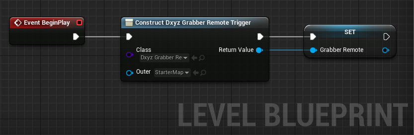

Miscellaneous¶
Display the Grabber feedback in your app¶
Open your Level Blueprint, and on the Event BeginPlay, add a “Create Widget” node. On the class input, select “DxyzWidgetFeedback”. Promote the output to a variable called “Feedback”. Add this widget to the viewport with a “Add to Viewport” node.
To get the feedback, make sure the RTP streaming is enabled in Grabber. Go on the “Network” menu and select “Service otpions”. Enable the RTP streaming and fill the IP and port fields, you will need them in Unreal.
In Unreal, use your variable “Feedback” to add a “Open feedback” node. Enter the IP adress and port you set up earlier in Grabber. Note that you can map this node to a keyboard input to enable the feedback whenever you want.
If you press Play, you should see the feedback at runtime.
You can drag the window title to put the widget where you want. The new position will be saved in a config file
You can change the size of the preview using the size slider that appears when hovering the widget with the mouse
You can double click on the preview or use the square icon to hide/show the widget’s frame
Tip
You can create a DxyzWidgetMouseGrab and add it to the viewport before creating other widgets. This way you’ll be able to show/hide the mouse by clicking outside of the Dynamixyz widgets.
Customize the eyes and the head rotations¶
Define the widget in Unreal 4.23 and above¶
Open your Level Blueprint, and on the Event BeginPlay, add a “Create Widget” node. On the class input, select “DxyzWidgetCalib”. Promote the output to a variable called “Calib”. Add this widget to the viewport with a “Add to Viewport” node.
Define the widget in Unreal 4.21 and above¶
Open your Level Blueprint, and on the Event BeginPlay, add a “Create Widget” node. On the class input, select “DxyzWidgetCalib”. Promote the output to a variable called “Calib”.
Add a “Live Link Component”, and use your variable Calib to set its own LiveLinkComponent variable. Add the calibration widget to the viewport with a “Add to Viewport” node.
Show and use the widget¶
Use your variable “Calib” to add a “Show widget” node to display the calibration GUI. Note that you can map this node to a keyboard input to show the calibration whenever you want.
If you press Play, you should see the calibration widget at runtime.
Use the dropdown list to select the Live Link subject for which you want to calibrate the animation. The refresh button allows you to update the list if a new source was added in Live Link. With the “Retarg. OFF” button, you can activate or deactivate the retargeting for this subject
{kind=link}
{kind=link}
The first part is the head control panel. You can :
Compute an offset rotation (on one, two or three axis) or reset the offset to neutral Lock the rotation on one, two or three axis Clamp the rotation on one, two or three axis Increase/decrease the roation on one, two or three axis
{kind=link}
{kind=link}
{kind=link}
{kind=link}
The second part is the pupils control panel. You can :
Compute an offset rotation (on one or two axis) or reset the offset to neutral Lock the rotation on one or two axis Clamp the rotation on one or two axis Increase/decrease the roation on one or two axis
{kind=link}
{kind=link}
{kind=link}
{kind=link}
Clicking on Save will save the configuration to a file that will be read each time you start again the application. Closing the widget or clicking on Cancel will cancel the modifications and reload the configuration from the file if it exists, or to the default configuration if not. You can also click on the top left arrow to minimize the widget :
{kind=link}
{kind=link}
{kind=link}
Use the left arrow to maximize the widget Use the dropdown list to select the Live Link subject for which you want to calibrate the animation. Use this button to start/stop the retargeting Use this button to compute the head offset rotation Use this button to compute the eyes offset rotation Use this button to save the configuration Use this button to close the widget and cancels the modifications
Note
The Dxyz Calibration assumes that the head bone is named Head and the left and right eyes bones are named Eye_L and Eye_R. If this is not the case, you can change the default name in the variables HeadBoneName, LeftEyeBoneName and RightEyeBoneName.
If you use different rigs, you can create new blueprints that inherit a DxyzCalibration widget :
Warning
If you inherit from one of the DxyzWidgets, you will need to enable the EventTick to be sure that you can drag the widget anywhere on the screen (by default the parent’s EventTick will not be called).
Tip
You can call the calibration and offsets functions from outside, for instance to map them on a keyboard input. Do not forget to uncheck “UseGUI” when it is in the function parameters.
This is the list of functions that can be called from the outside :
StartStopRetargetingForSubject : Starts or stop the retargeting for a subject
ApplyHeadCalibForSubject : Applies the head calibration for a subject
ApplyHeadOffsetForSubject : Computes and applies the head rotation offset for a subject
ResetHeadOffsetForSubject : Resets the head rotation offset for a subject
ApplyEyesCalibForSubject : Applies the pupils calibration for a subject
ApplyEyesOffsetForSubject : Computes and applies the pupils rotation offset for a subject
ResetEyesOffsetForSubject : Resets the pupils rotation offset for a subject
SaveConfiguration : Saves the configuration to the config file
ResetConfiguration : Goes back to the previous configuration from the config file
The Dxyz Widget Calibration Light¶
A second version of the calibration widget exists, the DxyzWidgetCalibrationLight. All of the above is also true with this second widget.
Tip
You can create a DxyzWidgetMouseGrab and add it to the viewport before creating other widgets. This way you’ll be able to show/hide the mouse by clicking outside of the Dynamixyz widgets.
Display the timecode of the frame (for UE4.20 and above)¶
Sometimes for synchronization it is necessary to get the timecode of each frame in order to trace it in the logs or on the screen.
In Unreal 4.23 and above¶
Create an Actor blueprint and open it. In the Components tab (usually top left), add a new component “Live Link Skeletal Animation”.
Select the newly added component, and on the Details panel, look for the Events section and click on the “+” on the right of “On Live Link Updated”.
On the Live Link Updated line, add a new node “Evaluate Live Link Frame” and fill the name of the Dynamixyz Live Link Subject you want to get info about. On the Role input, select “LiveLinkAnimationRole”.
Drag the output pin and look for the “Get Metadata” function. Break the output pin to a SubjectMetadata. The “Scene Timecode” output pin should give you the current frame’s timecode.
Connect the string to a Print String node, drag the Actor blueprint in the scene for the Event Tick to be called, and you will see the timecode on your screen.
In Unreal 4.21 and above¶
Create an Actor blueprint and open it. In the Components tab (usually top left), add a new component “Live Link”.
In the Event Graph tab, drag the new Live Link component in the graph, look for the node “Get Subject Data” and connect it to the Event Tick node. Fill the name of the subject you want to check out and drag the output Subject Frame Handle to select Get Metadata.
Break the output pin to a SubjectMetadata. The “Scene Timecode” output pin should give you the current frame’s timecode.

Connect the string to a Print String node, drag the Actor blueprint in the scene for the Event Tick to be called, and you will see the timecode on your screen.
In Unreal 4.20¶
Create an Actor blueprint and open it. In the Components tab (usually top left), add a new component “Live Link”.
Break the output pin to a SubjectMetadata and look for the “Find” node on the String Metadata map. Enter “timecode” and the output pin should give you the current frame’s timecode.
Connect the string to a Print String node, drag the Actor blueprint in the scene for the Event Tick to be called, and you will see the timecode on your screen.
Display the reception fps (for UE 4.20 and above)¶
In Unreal 4.23 and above¶
Create an Actor blueprint and open it. In the Components tab (usually top left), add a new component “Live Link Skeletal Animation”.
Select the newly added component, and on the Details panel, look for the Events section and click on the “+” on the right of “On Live Link Updated”.
On the Live Link Updated line, add a new node “Evaluate Live Link Frame” and fill the name of the Dynamixyz Live Link Subject you want to get info about. On the Role input, select “LiveLinkAnimationRole”.
Drag the output pin and look for the “Get Metadata” function. Break the output pin to a SubjectMetadata and look for the “Find” node on the String Metadata map. Enter “fps” and the output pin should give you the current reception framerate.
Connect the string to a Print String node, drag the Actor blueprint in the scene for the Event Tick to be called, and you will see the fps on your screen.
In Unreal 4.20 and above¶
Create an Actor blueprint and open it. In the Components tab (usually top left), add a new component “Live Link”.
In the Event Graph tab, drag the new Live Link component in the graph, look for the node “Get Subject Data” and connect it to the Event Tick node. Fill the name of the subject you want to check out and drag the output Subject Frame Handle to select Get Metadata.
Break the output pin to a SubjectMetadata and look for the “Find” node on the String Metadata map. Enter “fps” and the output pin should give you the current reception framerate.
Connect the string to a Print String node, drag the Actor blueprint in the scene for the Event Tick to be called, and you will see the fps on your screen.
Remote trigger the recording in Grabber¶
Note
This feature is still a WIP and could change in the next releases of Dynamixyz Grabber and Dxyz Live Link Plugin.
In Grabber, go to the Network -> Trigger options menu and enable the Motive trigger.
Chose a free port to establish a communication with Unreal.
If you want to be able to use a custom path and to create the folder if it does not exist, check the two corresponding options.
In UE, at the initialization of your level blueprint, add a Construct Object From Class node and select DxyzGrabberRemoteTrigger. Promote the output of this node to a new variable called Grabber Remote.

To start the recording, use the Grabber Remote to create a Send Start to Grabber node.
Fill the IP adress of the Grabber and chose a free port to establish the communication.
Enter a file name and a path for the video.
Select the timecode at which you want to start recording. If you do not want to use a timecode, just leave the field empty.
To stop recording, use the Grabber Remote to create a Send Stop to Grabber node.
Fill the same IP address and port as before.
Both these functions return true if the information could be sent to Grabber.